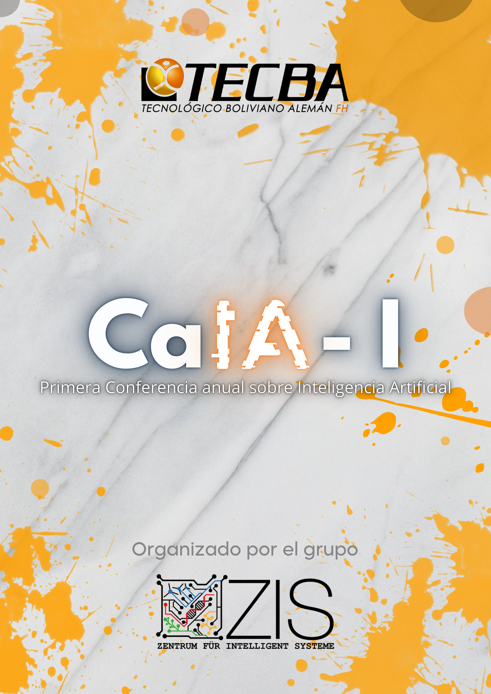
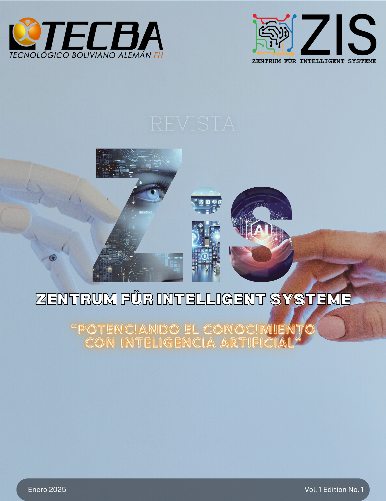

Ing. Brandy Reque Coca
Coordinador del ZIS
Ingeniero de sistemas con maestría en Inteligencia Artificial. Coordinador de múltiples proyectos de investigación en áreas como aprendizaje automático, visión por computadora y ética en IA. Ha publicado más de 20 artículos científicos en revistas indexadas.
- brandyreque1@gmail.com
- +591 77902758
- Cochabamba - Bolivia
Publicaciones y Proyectos

Redes Neuronales para Clasificación de Imágenes
Publicado en: Revista Latinoamericana de IA (2023)

Libro: Introducción a la Inteligencia Artificial
Editorial ZIS (2022)

Artículo: Ética en Sistemas Inteligentes
Revista Ética y Tecnología (2021)
×